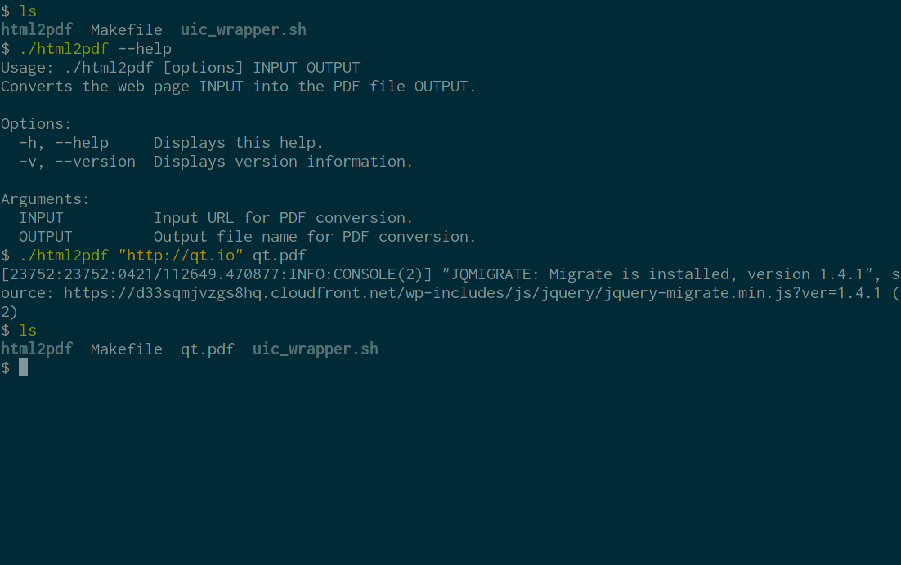

WebEngine Widgets Html2Pdf Example
Converts web pages to PDF documents using Qt WebEngine.

Html2Pdf demonstrates how to use Qt WebEngine to implement a command-line application for converting web pages into PDF documents.
Running the Example
To run the example from Qt Creator, open the Welcome mode and select the example from Examples. For more information, visit Building and Running an Example.
The Conversion Process
In order to convert a web page into a PDF document we need to:
- Create a QWebEngineView.
- Tell the QWebEngineView to begin loading the target URL and wait for it to finish.
- Tell the QWebEngineView to begin converting the loaded page into a PDF file and again wait for it to finish.
- Once the conversion is finished, exit the program.
This process is encapsulated in the Html2PdfConverter class:
#include <QApplication> #include <QCommandLineParser> #include <QFile> #include <QTextStream> #include <QWebEngineView> #include <functional> #include <utility> class Html2PdfConverter : public QObject { Q_OBJECT public: explicit Html2PdfConverter(QString inputPath, QString outputPath); int run(); private slots: void loadFinished(bool ok); void pdfPrintingFinished(const QString &filePath, bool success); private: QString m_inputPath; QString m_outputPath; QScopedPointer<QWebEngineView> m_view; };
In the constructor we create the QWebEngineView and connect to its QWebEngineView::loadFinished and QWebEngineView::pdfPrintingFinished signals:
Html2PdfConverter::Html2PdfConverter(QString inputPath, QString outputPath) : m_inputPath(std::move(inputPath)) , m_outputPath(std::move(outputPath)) , m_view(new QWebEngineView) { connect(m_view.data(), &QWebEngineView::loadFinished, this, &Html2PdfConverter::loadFinished); connect(m_view.data(), &QWebEngineView::pdfPrintingFinished, this, &Html2PdfConverter::pdfPrintingFinished); }
The run() method will trigger the conversion process by asking QWebEnginePage to start loading the target URL. We then enter the main event loop:
int Html2PdfConverter::run() { m_view->load(QUrl::fromUserInput(m_inputPath)); return QApplication::exec(); }
After the loading is finished we begin PDF generation. We ask the QWebEnginePage::printToPdf method to write the output directly to disk:
void Html2PdfConverter::loadFinished(bool ok) { if (!ok) { QTextStream(stderr) << tr("failed to load URL '%1'").arg(m_inputPath) << "\n"; QCoreApplication::exit(1); return; } m_view->printToPdf(m_outputPath); }
Once we receive the signal that the PDF conversion has finished, all that remains is to report potential errors and exit the program:
void Html2PdfConverter::pdfPrintingFinished(const QString &filePath, bool success) { if (!success) { QTextStream(stderr) << tr("failed to print to output file '%1'").arg(filePath) << "\n"; QCoreApplication::exit(1); } else { QCoreApplication::quit(); } }
The Main Function
Our main function is responsible for setting up a QApplication and parsing command line arguments:
int main(int argc, char *argv[]) { QApplication app(argc, argv); QCoreApplication::setOrganizationName("QtExamples"); QCoreApplication::setApplicationName("html2pdf"); QCoreApplication::setApplicationVersion(QT_VERSION_STR); QCommandLineParser parser; parser.setApplicationDescription( QCoreApplication::translate("main", "Converts the web page INPUT into the PDF file OUTPUT.")); parser.addHelpOption(); parser.addVersionOption(); parser.addPositionalArgument( QCoreApplication::translate("main", "INPUT"), QCoreApplication::translate("main", "Input URL for PDF conversion.")); parser.addPositionalArgument( QCoreApplication::translate("main", "OUTPUT"), QCoreApplication::translate("main", "Output file name for PDF conversion.")); parser.process(QCoreApplication::arguments()); const QStringList requiredArguments = parser.positionalArguments(); if (requiredArguments.size() != 2) parser.showHelp(1); Html2PdfConverter converter(requiredArguments.at(0), requiredArguments.at(1)); return converter.run(); }
Note that to use Qt WebEngine Widgets we need to create a QApplication and not a QCoreApplication, even though this is a command line application.